Спокойно и по делу о зависимости
Статьи Академического Медицинского Центра: что происходит с организмом при запое, как устроено лечение и кодирование, как бросить курить и вернуть себе время у экрана.
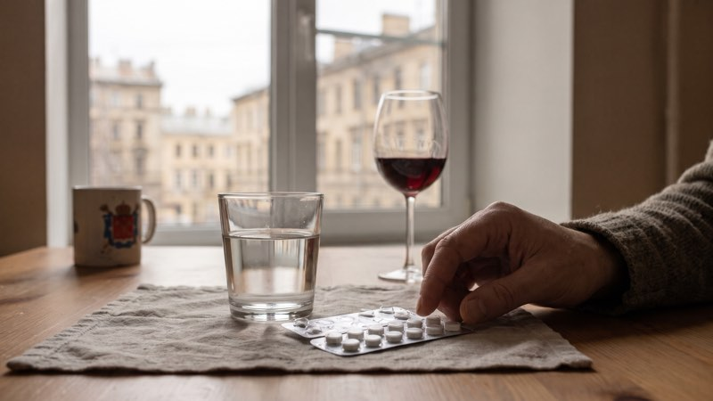
ЗдоровьеАлкоголь и антибиотики: можно ли и через сколько
С какими антибиотиками алкоголь вызывает тяжёлую реакцию, чем он мешает лечению с остальными, что из страшилок миф и сколько ждать после курса. Разбираем по порядку.
 Близким
Близким
Белая горячка: признаки и что делать
Белая горячка начинается через 2-4 дня после выхода из долгого запоя. Первые признаки, почему это опасно для жизни, что делать родным до приезда скорой и как её предупредить.
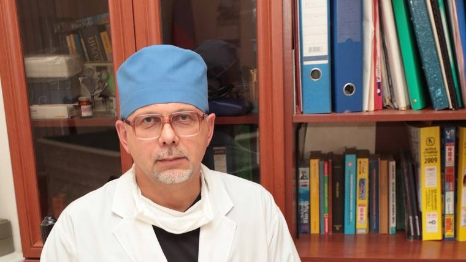
О центреОлег Владимирович Ганжа: военный врач, который создал Академический Медицинский Центр
Кто основал Академический Медицинский Центр в Санкт-Петербурге: путь Олега Владимировича Ганжи от суворовского училища и Военно-медицинской академии до наркологии.
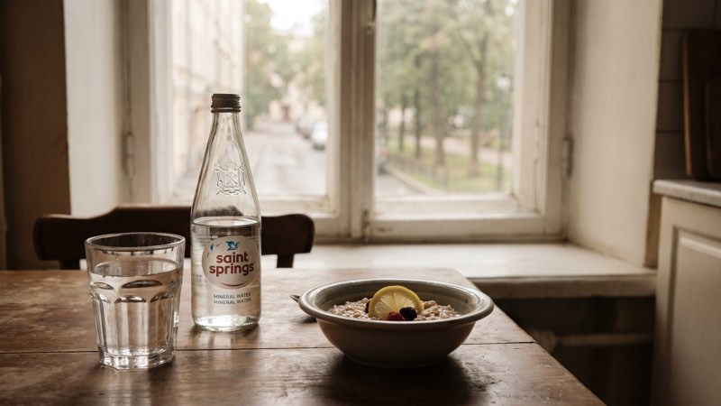
ЗапойКак снять похмельный синдром дома и когда нужен врач
Чем похмелье отличается от абстинентного синдрома после запоя, что реально помогает дома, чего делать нельзя и при каких признаках звонить врачу или 103.
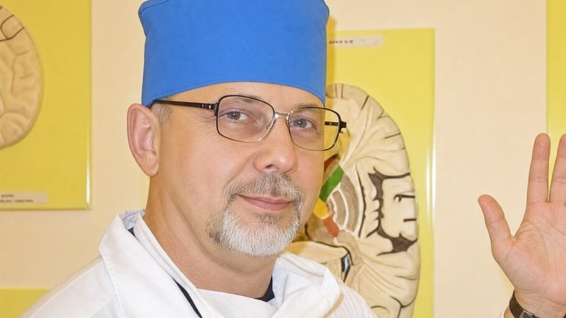
О центре«Мои пациенты мои соратники»: как основатель центра понимает лечение
Основатель Академического Медицинского Центра О. В. Ганжа называет пациентов соратниками. Что это значит на практике: команда врачей, уважение, трезвое окружение и поддержка семьи.
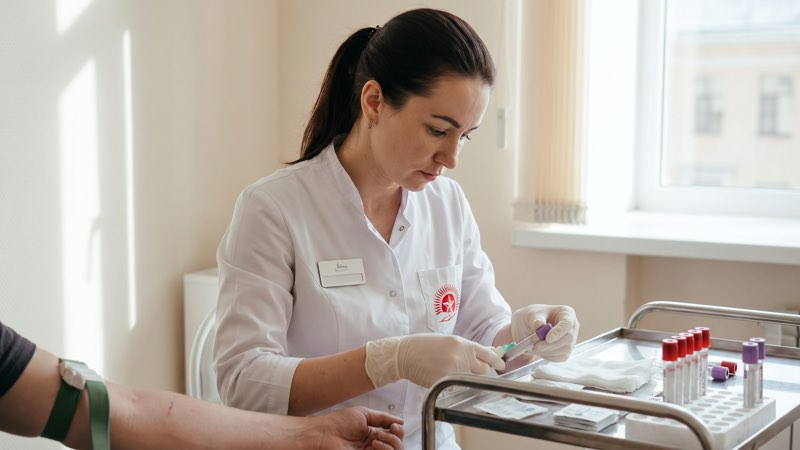
КодированиеКак подготовиться к кодированию: сколько не пить и какие нужны анализы
Сколько дней не пить перед кодированием, зачем нужны анализы, что рассказать врачу и кому кодирование противопоказано. Консультация и анализы в день обращения бесплатно.
 Здоровье
Здоровье
Через сколько выветривается алкоголь из крови и выдоха
Сколько часов выводится алкоголь из крови, от чего это зависит, как примерно посчитать время самому, почему кофе и душ не помогают и можно ли утром за руль.
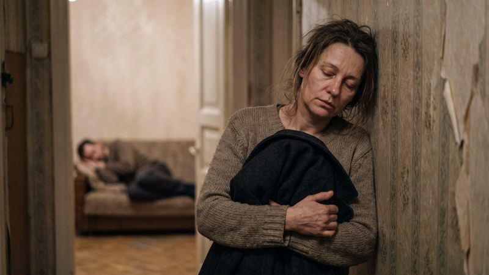
БлизкимСозависимость: когда близкий пьёт, а страдаете вы
Что такое созависимость, когда близкий пьёт: признаки, почему спасение продлевает выпивку, как ставить границы, где искать поддержку и как защитить детей. Советы для родных.
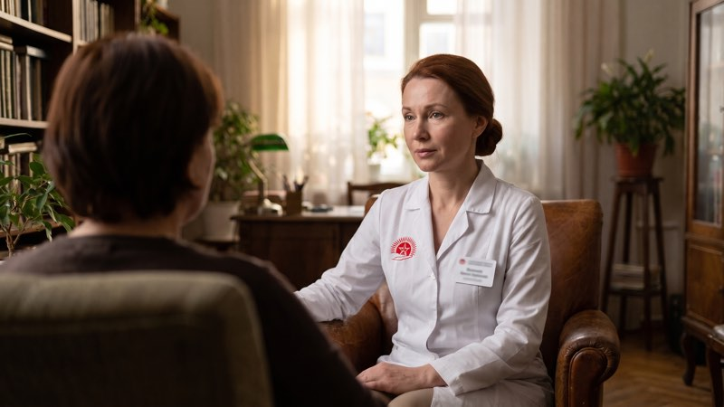
КодированиеСрыв после кодирования: почему случается и что делать
Почему случается срыв после кодирования от алкоголя, что делать сразу, если действует дисульфирам, как говорить с врачом, выбрать метод заново и как поддержать близкого.
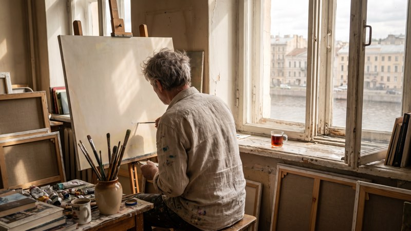
О центреПочему выпивка не снимает напряжение: трезвость и творчество
Многие пьют, чтобы снять напряжение или найти вдохновение. Почему это не работает, что говорит основатель центра О. В. Ганжа и как справляться со стрессом без алкоголя.
Психотерапия при алкоголизме: три направления, с которыми работает центр
Что такое симптомоцентрированная, личностноцентрированная и социоцентрированная психотерапия, чем они помогают при алкоголизме и почему в центре их сочетают.
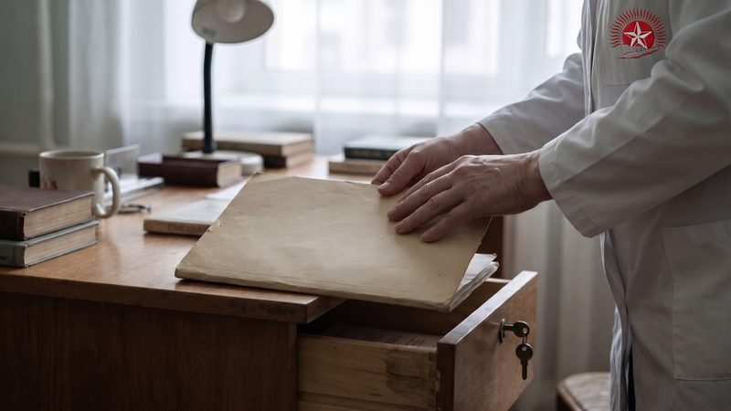
Лечение алкоголизмаСтавят ли на учёт у нарколога при анонимном лечении
Что сейчас вместо «учёта» у нарколога, когда устанавливают диспансерное наблюдение, кто может узнать о лечении в частной клинике и как это связано с правами и работой.
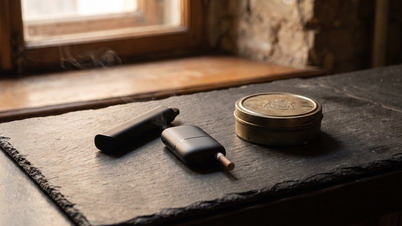
КурениеВейп, снюс, IQOS: вредно ли и как бросить
Чем вредны вейпы, системы нагревания табака, снюс и никотиновые паучи, что говорит закон, на что обратить внимание родителям подростков и как бросить. Помощь анонимно.
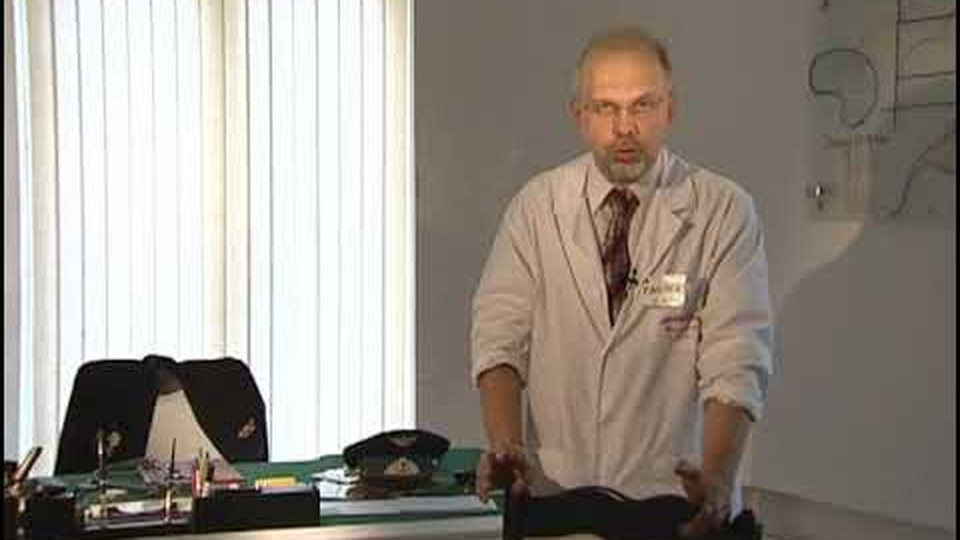
О центреВетераны боевых действий и алкоголь: взгляд военного врача
Почему после войны многие начинают пить, как отличить усталость от беды и чем помочь ветерану и его семье. С опытом основателя центра, военного врача О. В. Ганжи.
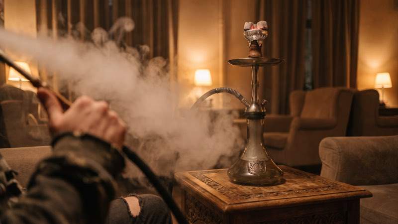
КурениеКальян: вред, зависимость и как бросить
Фильтрует ли вода дым кальяна, сколько дыма человек вдыхает за сеанс, чем опасны угли и общий мундштук, есть ли вред у безникотиновых смесей и как бросить кальян.
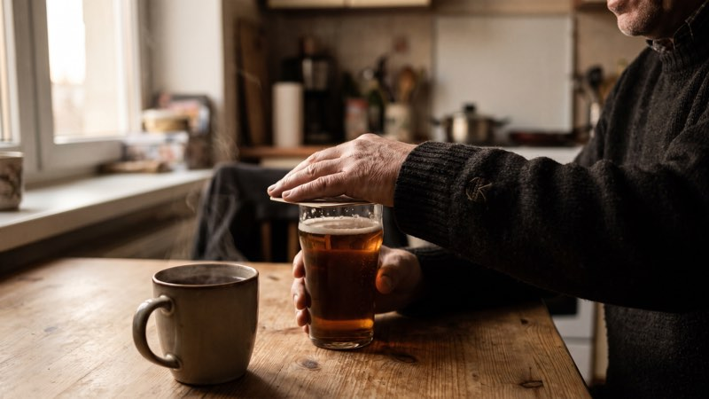
КодированиеЧто будет, если выпить после кодирования или подшивки
Что происходит, если выпить после кодирования: реакция на дисульфирам при уколе, подшивке и геле, чем отличается гипноз и Довженко, где скрытый алкоголь и можно ли снять код.
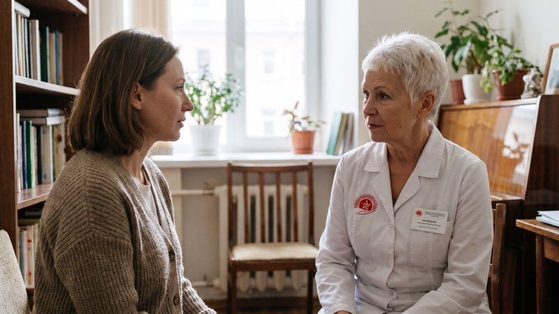
Лечение алкоголизмаЖенский алкоголизм: признаки и как помочь
Почему женщины пьют скрытно и почему зависимость у них развивается быстрее, по каким признакам её заметить, как поговорить без упрёков и где получить помощь анонимно.
 Близким
Близким
Как уговорить близкого лечиться от алкоголизма
Как начать разговор с пьющим близким, когда это делать и чего избегать. Почему нельзя подмешивать препараты без ведома и что закон говорит о принудительном лечении.
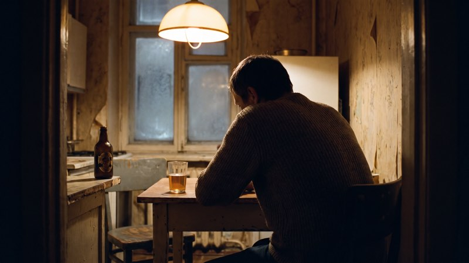
АлкоголизмСтадии алкоголизма: признаки и когда пора к врачу
Три стадии алкоголизма и их признаки, короткий тест из четырёх вопросов и чем бытовое пьянство отличается от зависимости. Когда идти к наркологу, анонимно, в Санкт-Петербурге.
Эспераль: как действуют подшивка, гель и укол
Что такое Эспераль и другие препараты дисульфирама, чем отличаются подшивка, гель и укол, что будет, если выпить, и где прячется алкоголь. Цены в Санкт-Петербурге, анонимно.
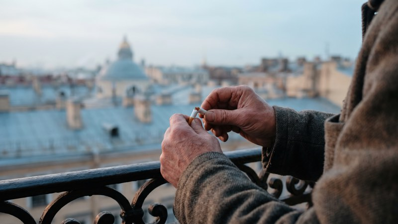
КурениеКак бросить курить, если не получается самому
Почему бросить курить трудно даже при сильном желании, что помогает пережить первые недели, чем опасны вейпы и IQOS и когда стоит обратиться к врачу. Анонимная помощь в Санкт-Петербурге.
 Кодирование
Кодирование
Кодирование от алкоголизма в Санкт-Петербурге: какие методы бывают и как выбрать
Какие методы кодирования от алкоголя есть в Академическом Медицинском Центре в Санкт-Петербурге: укол, подшивка, гель, гипноз, метод Довженко. Как выбрать и подготовиться, цены. Анонимно.
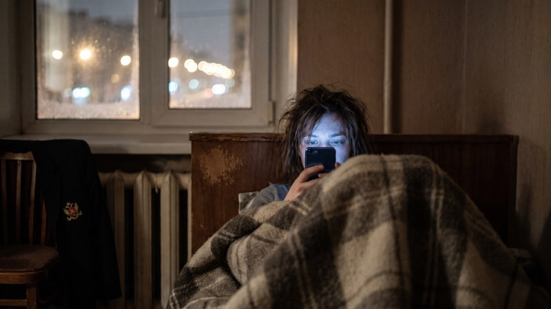
Экранное времяТелефон перед сном: почему потом не уснуть и что с этим делать
Как вечерняя лента отодвигает сон, почему ночной режим экрана помогает мало, какие простые привычки возвращают нормальный сон и когда с бессонницей пора к врачу.
 Запой
Запой
Вывод из запоя на дому в Санкт-Петербурге: как проходит визит врача
Как проходит вывод из запоя на дому в Санкт-Петербурге и Ленобласти: осмотр нарколога, капельница, что делать родным. Выезд круглосуточно и анонимно, цены в статье.